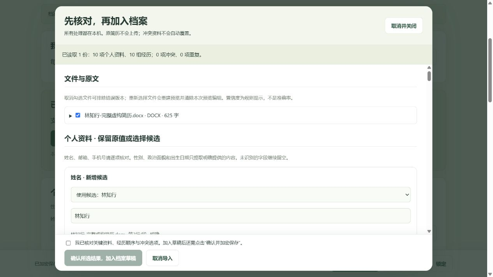
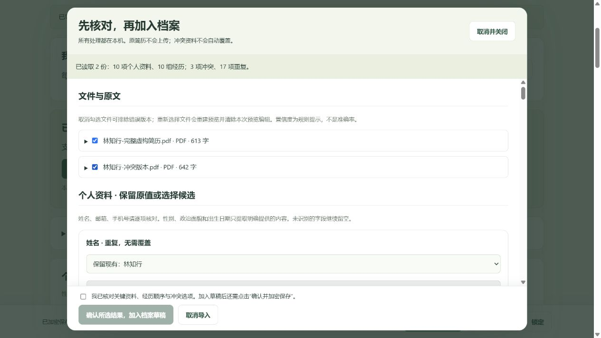
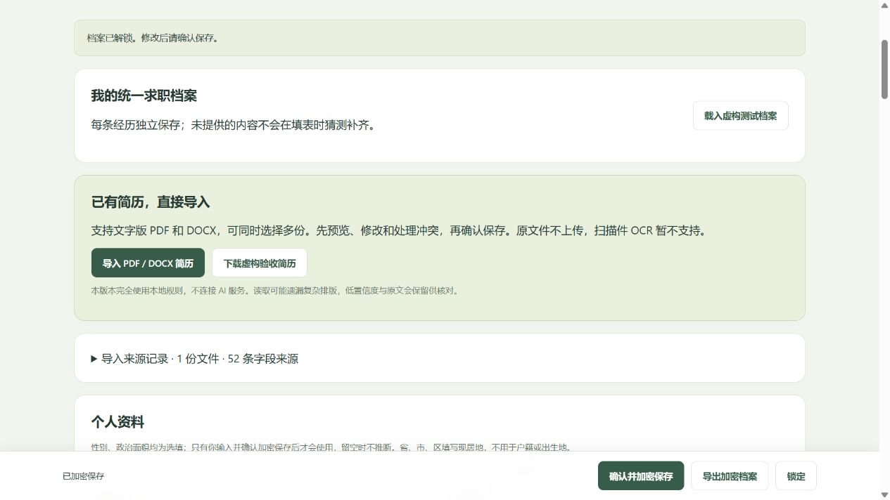
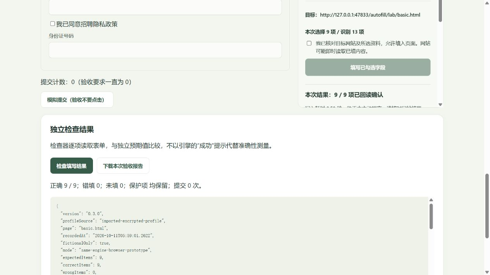
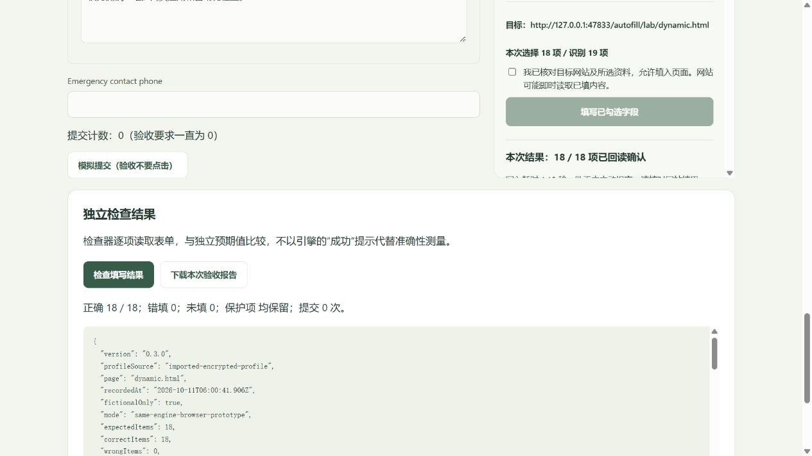
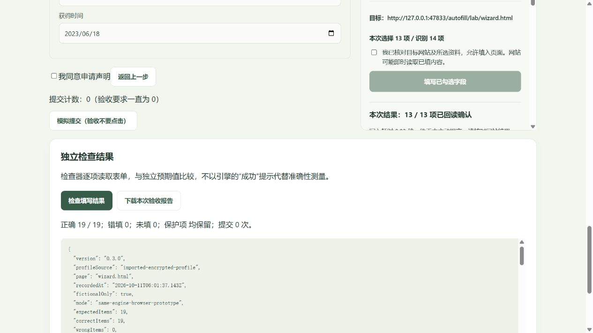
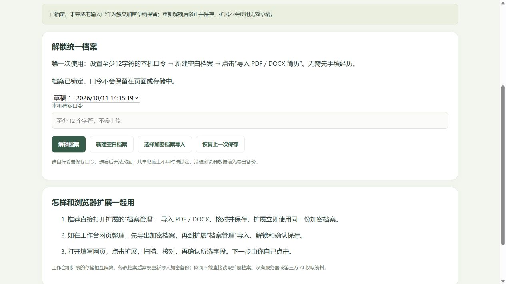
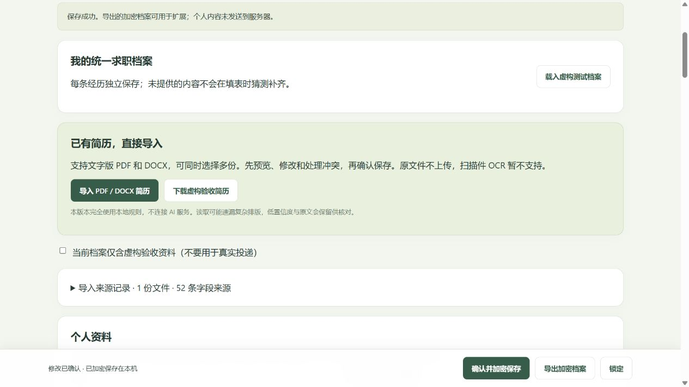
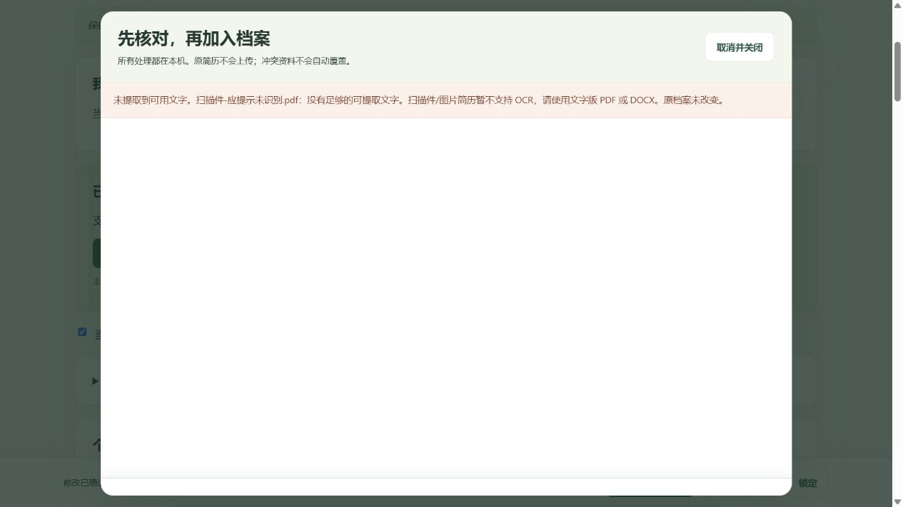

职有引力 · 继续原项目 · 2026年10月11日 · v0.3.0 本机候选版
先找到填写按钮，
再把已有简历导入进来。
先双击项目文件夹中的“开始使用.cmd”。工作台首页、统一档案、A/B/C 测试页均已增加安装指引。网页不能替 Edge 安装扩展；填写按钮位于 Edge 右上角扩展菜单中。
1. 安装到日常 Edge：只需要选一个文件夹
- 在 Edge 地址栏输入
edge://extensions，按回车。清空左侧“职有引力”搜索文字。 - 打开左下角开发人员模式。点击加载解压缩的扩展。
- 选择整个目录：
extension
在选择文件夹对话框中找到你下载的项目目录，选中其中完整的 extension 子文件夹，再点“选择文件夹”。 - 列表应出现职有引力 · 本机求职填表，版本为 0.3.0，开关开启。点 Edge 右上角拼图图标，把它显示在工具栏。
- 已有旧版时，对原目录的扩展点“重新加载”，关闭旧弹窗并刷新表单。不要同时安装多个副本。
备用安装包：release\求职自动填写扩展-v0.3.0.zip。ZIP 先“全部解压”，再选择其中的 extension 文件夹。选择你下载的项目目录中的 extension 文件夹；更换目录或卸载扩展前，先导出加密档案备份。
本扩展没有上架商店，因此商店搜索不到。只请求“当前页面临时访问、执行填表脚本、本机存储”；没有所有网站永久访问权限。要在招聘表单所在标签页点击扩展图标，才能取得本次页面访问权。浏览器设置页、商店页不可填写；企业策略限制时由管理员处理。
在你下载的项目目录中选择整个 extension 文件夹；安装步骤以浏览器扩展管理页和 README 为准。
2. 第一次使用：直接导入已有 DOCX / PDF
- 推荐在扩展中完成：点工具栏扩展 →“档案管理”。设置至少 12 字符的本机档案口令，点“新建空白档案”。已有档案则解锁；不必先手填经历。
- 点导入 PDF / DOCX 简历。可一次选最多 5 份同一个人的版本。先用本页提供的虚构文件练习。
- 在预览中核对姓名、邮箱、手机、学校、公司、起止时间、经历顺序和原始描述。可展开“文件与原文”及每条来源；“明确 / 需核对 / 低置信度”是规则提示，不是准确率保证。
- 已有资料默认保留。要改动时，在该项下拉框选择候选，再编辑输入框。重复经历不会重复添加。若同单位的两个候选实际是不同经历，逐个选择候选，点击将选中候选作为另一段经历保留；检查新增的独立条目。
- 检查“未识别 / 存在歧义的原文”。可手动归类或留待补录。性别、政治面貌、出生日期只使用原文明示值；年龄、照片、毕业年份不会用来猜测这些内容。
- 勾选底部核对确认，点确认所选结果，加入档案草稿。此时尚未替换有效档案。继续修改后，点页面底部一直可见的确认并加密保存，看到保存成功才算完成。
- 点“锁定”再解锁，确认修改还在。用“导出加密档案”保存 .private.json 备份；口令与文件分开保管。来源原文与字段来源也在同一加密备份里。
同一份档案如何供扩展使用：在扩展“档案管理”导入并保存后，填写助手直接读取这份加密档案，没有另外的简历导入数据库。若先在工作台网页整理，导出加密档案，再在扩展“档案管理”点“选择加密档案导入”、输入原口令、核对并保存。网页与扩展的浏览器存储隔离，不能自动同步；之后修改需重新导入备份。


3. 选择资料 → 识别字段 → 预览 → 填写 → 核对
- 在“档案管理”完成资料选择并保存。当前原型只有一份有效档案，多份简历用于合并核对；不同人的简历不要混入同一档案。
- 返回招聘表单标签页。点击工具栏扩展，输入本机口令解锁。弹窗关闭会清除本次解锁状态。
- 点“识别当前页”。如需多条教育经历，先点“准备经历分组”，等待新栏位出现。
- 检查目标网址、关键资料、经历序号、日期与下拉选项。未知字段可手工选择对应关系；勾选记忆后只记字段对应，不存网页上的个人值。
- 勾选“我已核对目标网站及所选资料”，点“填写已勾选字段”，等结果出现。已有内容默认不覆盖，需要覆盖的项单独确认。
- 回到表单核对。下一步由你点击，进入新一步后重新识别。验证码、声明、上传附件及提交均由本人操作。助手不提交，但网站可能即时读取输入内容。
4. 用虚构资料做 A / B / C 扩展验收
从样例页下载“林知行-完整虚构简历.docx”，导入扩展档案。检查：2 段教育、2 段实习、1 段工作、2 段项目、2 项技能、1 项证书。把第 2 段项目描述末尾加上“已人工核对。”后保存。再同时导入完整 PDF 与冲突 PDF，确认原邮箱 lin.zhixing@example.com、原职位“软件工程师”和人工修改未被覆盖。
在扩展档案中勾选“当前档案仅含虚构验收资料”并保存。打开下列表单，勾选“使用已安装的扩展验收（隐藏内置助手）”，然后只用工具栏扩展操作。不要把内置助手测试当作扩展测试。
| 页面 | 操作 | 预期 |
|---|---|---|
| A 中文表单 | 识别、预览、确认填写；关闭弹窗后点页面“检查填写结果”。 | 9/9 正确；已填城市“上海”保持；验证码、证件、同意框不动；提交 0。 |
| B 英文动态表单 | 先准备经历分组，核对两条教育，填写并检查。 | 18/18 正确；两所学校顺序正确；紧急联系人不填；提交 0。 |
| C 多步骤 | 将“联系邮址”手工对应到“个人资料 · 电子邮箱”；保留记忆。填第 1 步后自己点下一步，再打开扩展识别并填写。 | 19/19 正确；日期缺日、自定义搜索、未知编号保留人工；声明不选；提交 0。 |
每页点“下载本次验收报告”。若错填关键资料，立即停止该页验收并保留报告。可以刷新表单清空测试值，再试一次；不要点击“模拟提交”。
还要试：导入“扫描件-应提示未识别.pdf”，应提示 OCR 未支持且原档案不变；选择冲突邮箱加入草稿后直接锁定，应保留加密恢复草稿，填写端仍使用旧有效邮箱。重新解锁并明确保存后才更新。
实际验收状态（不要混淆）
| 项目 | 本轮状态 |
|---|---|
| 真实 DOCX / PDF 文件本机导入、修改、加密保存、重开、备份重导入 | 已实测；每种完整文件各有 52 个非空候选值，逐项与虚构原文核对。 |
| 导入档案 → A / B / C 共用填写引擎 | 46/46 目标项正确、0 错填、0 提交；C 包含一次人工邮箱映射。截图见下方。 |
| 日常 Edge 安装、启用、实际权限、v0.3.0 扩展弹窗和 PDF worker | 尚待你安装后验证。当前无法连接你的 Edge；内置浏览器验证不能替代。 |
| 真实招聘网站兼容性与人工节时 | 尚待验证。没有手填基线，不提供虚假的节省百分比。 |
怎样测节省时间
每页先手填一次，用页面人工计时按钮记录从开始到核对结束的秒数；再刷新，用手机秒表测扩展流程，包含解锁、修正映射和核对。每页建议 3 次取中位数。计算（手填秒数 − 辅助秒数）÷ 手填秒数。只有关键资料零错填且总耗时减少才算达标；不要把引擎写入时间当作总操作时间。
| 页面 | 手填秒数 | 扩展总秒数 | 错填 / 未填 / 异常 |
|---|---|---|---|
| A | 待填写 | 待填写 | 待记录 |
| B | 待填写 | 待填写 | 待记录 |
| C 首次 / 复用 | 待填写 | 待填写 | 待记录 |
5. 真实操作截图
以下均为本轮真实页面截图，使用虚构资料，在隔离测试地址 47833 操作。它们证明导入流程和共用引擎结果，不能证明你的 Edge 扩展已经安装。







6. 已知限制与隐私
- 全部解析在当前浏览器完成，PDF.js 与解压库随安装包提供；不使用第三方 AI、遥测或云端简历服务。原文件二进制不存入档案，选中文档的提取原文、来源文件名与 SHA-256 随统一档案加密保存。可在“导入来源记录”中清空来源，确认保存后生效。
- 每批最多 5 份、每份 10MB、PDF 最多 30 页、每份文字 6 万字、档案来源最多 10 份；来源总元数据上限 600KB、有效加密档案明文上限 1MB。超限会提示，原有效档案不替换。
- 不支持扫描件 OCR、旧 DOC、密码 PDF。双栏、文本框、特殊字体、图片中的文字可能遗漏或顺序错误；需要核对原文。DOCX 测试文件已实际导入并校验文字结构，当前环境没有 Word/LibreOffice，未声称已渲染验证其 Word 版式。
- 未知标题的经历可能保留在“未识别”区，不自动猜测。模糊英文标签保守留待核对；只到年份或月份的日期不会补成具体日。不同人的简历会显示身份冲突，不能默认合并。
- 不处理跨域 iframe、Shadow DOM、自定义组合控件、文件上传、验证码、密码、证件、声明。已有值和网页变化会跳过。实际招聘站点尚未逐站验收。
- 旧 v2 档案可由 v0.3.0 读取。含新出生日期 / 来源字段的新备份应使用 v0.3.0；旧 v0.2.1 不保证读取。工作台与扩展应一起更新。
- 加密使用本机口令，遗忘不能找回。清理浏览器数据、卸载或更换扩展目录前先备份；加密不能保护已解锁页面上的内容或已被控制的电脑。
- 岗位搜索、薪资组合筛选、收藏、标签、投递管理保留；本轮没有扩充岗位或改写核验时间，没有公开发布。
官方操作依据：Microsoft Edge 本机扩展安装 · activeTab 临时权限。开发与证据报告位于项目 docs/12-v0.3.0-导入架构与验收报告.md。旧 v0.2.1 冻结包与独立证据保留。